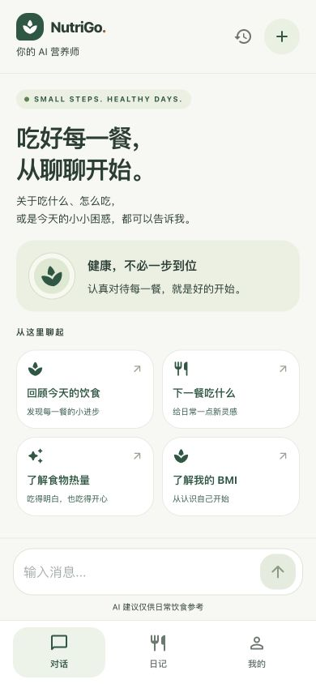
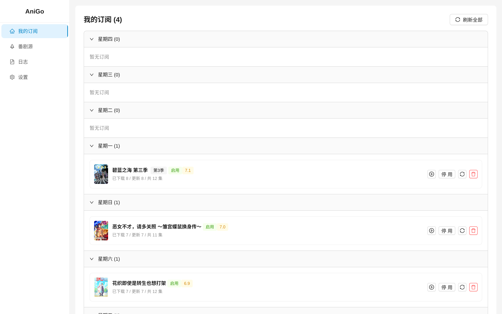

OPEN SOURCE
LoopX contributor
Worked on encoding regression coverage and Node 26 compatibility tests in a long-running AI Agent control platform.

StudentAI Full-Stack / Agent DeveloperAnimation Enthusiast
Worked on encoding regression coverage and Node 26 compatibility tests in a long-running AI Agent control platform.
Undergraduate at Federation University Australia. Graduation expected in June 2028.
Agent loops, tool calling, RAG and vector search. Built five nutrition tools with LiteLLM, BGE-small-zh and ChromaDB in NutriGo.
REST APIs, persistence, JWT authentication and service integration across Go and Python services.
RSS workflows, LLM-assisted parsing and rule-based selection in AniGo. Work with Docker Compose, GitHub Actions, pytest and Go test.

Food recognition, nutrition analysis and an agent with five tools backed by a 2,277-entry RAG knowledge base.

An RSS workflow that uses an LLM to parse release details, then applies rules to choose a version and coordinate cloud tasks.
National Software and Information Technology Professionals Competition · Software Competition, Python category
Mathematical Contest in Modeling / Interdisciplinary Contest in Modeling